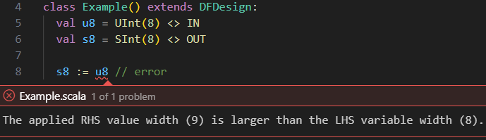

Type System
DFHDL is a Scala library and thus inherently supports type-safe and modern language constructs. This chapter covers the rules and API of this type system.
Check out the benefits of the DFHDL type system
-
 Strongly-typed
Strongly-typed
Most type checking is done statically and enforces strict rules that prevent ambiguity.
//8-bit unsigned input val u8 = UInt(8) <> IN //2-bit unsigned input val u2 = UInt(2) <> IN val y1 = u8 - u2 //ok // Error prevents ambiguous behavior // when a wider num is subtracted from // a narrow num. val y2 = u2 - u8 //error
-
Bit-accurate
Each DFHDL value has known bit-width, which is used to enforce various rules to prevent data loss.
//8-bit unsigned input val u8 = UInt(8) <> IN //8-bit signed output val s8 = SInt(8) <> OUT // Error prevents data loss when u8 is // converted to a 9-bit signed to be // assigned to s8, which is only 8-bits // wide. s8 := u8 //error -
Composable
Types can be composed through structs or tuples to form new types.
//new Pixel type as a structure //of two unsigned 8-bit numbers case class Pixel( x: UInt[8] <> VAL, y: UInt[8] <> VAL ) extends Struct val pixel = Pixel <> VAR //select and assign fields pixel.x := pixel.y -
Expandable
New types can be defined, and methods can be added for new or existing types.
//new AESByte type of unsigned 8-bit num case class AESByte() extends Opaque(UInt(8)) //define addition between two AESByte //values as a xor operation extension (lhs: AESByte <> VAL) def +(rhs: AESByte <> VAL): AESByte <> DFRET = (lhs.actual ^ rhs.actual).as(AESByte) val x, y = AESByte <> VAR val z = x + y //actually XOR
DFHDL Values
Each DFHDL value is simply a Scala object that has two critical fields:
-
(Shape) Type, aka DFType
Determines the bit-width and bit-structure of the value. Currently the supported types are:
- DFHDL Bit/Boolean:
Bit/Boolean - DFHDL Bit Vector:
Bits - DFHDL Integer:
UInt/SInt/Int -
DFHDL Fix-Point (future work)
-
DFHDL Flt-Point (future work)
-
DFHDL String (future work)
- DFHDL Enumeration:
... extends Encoding - DFHDL Vector:
[CellType] X [Dim] - DFHDL Structure:
... extends Struct - DFHDL Tuple:
(T1, T2, ..., Tn) - DFHDL Opaque:
... extends Opaque - DFHDL Unit (Void):
Unit
- DFHDL Bit/Boolean:
-
(Access) Modifier
Determines what kind of access the user has on the value. User explicit modifiers:
- Variable:
VAR - Port:
IN/OUT/INOUT - Constant:
CONST - Struct Field:
VAL - Method Param:
VAL - Method Return:
DFRET/RTRET/EDRET
Although this mechanism can be quite complex under the hood, the explicit modifiers available to the user are straightforward.
- Variable:
Internal Type-System Hierarchy (For Advanced Users)
DFHDL brings type-driven development concepts to hardware design, by creating an extensible type class hierarchy. Any DFHDL value is a Scala object instance of the class DFVal[T <: DFTypeAny, M <: ModifierAny], where T is the type (shape) of value and M is a modifier that sets additional characteristics of the DFHDL value, like if its assignable, connectable, initializable, etc.


For example, the Scala value x which references a port declared like val x = Boolean <> IN has the type DFVal[DFBool, Modifier.Dcl].
Variable and Port Declarations
Ports are DFHDL values that define the inputs and outputs of a design. Variables are DFHDL values that represent internal design wiring, logic, or state.
Syntax
val _name_ = _dftype_ <> _modifier_ [init _const_]
_modifier_is set with one of the following:VAR- to construct a variableIN- to construct an input portOUT- to construct an output portINOUT- to construct an input-output port
_dftype_is set according to the shape type (DFType) of the DFHDL value. Each of the supported DFTypes have their own constructors. See relevant sections for the DFHDL DFType you wish to construct.<>is the operator applied between a_dftype_and a_modifier_to construct the Scala value that represents a DFHDL variable or port accordingly. Note: the same<>operator is used as a language construct for declaring connections. Thanks to Scala method overloading,<>can be shared for both use-cases with no issues (due to the Scala argument type difference).initis an optional construct to initialize the DFHDL variable/port declaration history with the applied_const_value._const_is the state history initialization value or sequence of initialization values as a Scala Tuple. This value must be a constant that is supported by the DFType_dftype_._name_is the Scala value name reference for the DFHDL variable/port you constructed. The DFHDL compiler preserves this name and uses it in error messages and the final generated artifacts (e.g., Verilog module or VHDL entity port names). More information is available under the naming section.
| Port & variable declaration examples | |
|---|---|
1 2 3 4 5 6 7 8 9 10 11 12 | |
Rules
Scope
-
Variables can be declared in any DFHDL scope, except global scope, meaning within DFHDL designs, domains, interfaces, methods, processes, and conditional blocks.
1 2 3 4 5
//error: global variables are not //allowed val x = Bit <> VAR class Foo extends DFDesign: val o = Bit <> OUT -
Ports can only be declared at the scopes of DFHDL designs, domains, and interfaces. Other scopes are not allowed.
1 2 3 4 5 6 7
class Foo extends DFDesign: val i = Boolean <> IN if (i) //error: cannot create a port in a //DFHDL condition val o = Bit <> OUT o := 0
Naming
Ports and variables must always be named, and cannot be anonymous.
1 2 3 4 | |
As you'll read later on, constants and other values can be anonymous.
Connectable
Ports and variables are connectable, meaning they can be the receiving (drain/consumer) end of a connection <> operation.
For input ports this occurs outside their design scope, while connecting to an external value.
For output ports and variables this occurs only within their design scope, while connecting to an internal value.
Assignable (Mutable)
Output ports, input-output ports, and variables are assignable (mutable), when they can be the receiving (drain/consumer) end of an assignment :=/:== operation, which occurs only within their design scope. Input ports can never be assigned (are immutable).
Not Constant
Ports and variables are never considered to be constant (even when connected/assigned only once and to a constant value) for elaboration. Later compilation stages can apply further constant propagation steps that reduce logic utilization.
INOUT Port Limitation
INOUT (bidirectional) ports are generally used to reduce IO pins from top-level device connectivity (e.g., protocols like I2C benefit from such ability). They are not meant for inter-device wiring reduction, and thus should be used scarcely within their designed purpose. Throughout the years they were also used to workaround HDL limitations like reading from output ports in VHDL'93, or lack of interfaces. Since DFHDL has none of these limitation, we encourage you to use INOUT for their intended purpose only, as synthesis tools for FPGAs and even ASICs will not cooperate. Although, theoretically, in DF domain we can enable bidirectional communication that can later be compiled into two separate ports, there is no real value behind this.
Grouping
Ports can also be grouped together in a dedicated interface [wip].
Transitioning
Differences from Verilog
- DFHDL supports more abstraction domains, and not just ED abstraction like Verilog does.
- The non-blocking assignment operator in DFHDL is
:==instead of<=in Verilog.
Differences from VHDL
Hi there
Differences from Scala parameters/fields
Data validity
Number of outputs
Constant/Literal Values
In DFHDL there are three methods to construct constant DFHDL values:
- Literal value generators: These language constructs directly generate constant DFHDL values. Currently, these are:
- Constant candidates: Various Scala values can become DFHDL values, as.
Constant declaration syntax
val _name_: _dftype_ <> CONST = _value_ - Constant value propagation: Cleaners
Syntax
Rules
Unconnectable
Constant values are not connectable, and can never be the receiving (drain/consumer) end of a connection <> operation.
Unassignable (Immutable)
Constant values are immutable and cannot be assigned, meaning they can never be the receiving (drain/consumer) end of an assignment :=/:== operation.
DFHDL Value Statement Order & Referencing
Any DFHDL value must be declared before it can be referenced in code. Other than this (pretty intuitive) limitation, no other limitations exists and ports, variables, constants, and other values may be freely distributed within their approved scope space. During the compilation process, you can notice that the compiler reorders the port declarations so that they always come second to constant declarations, and variables right after.
DFHDL Value Connections
After (or during) a design instantiation, its ports need to be connected to other ports or values of the same DFType by applying the <> operator. Variables can also be connected and used as intermediate wiring between ports. Output ports can be directly referenced (read) without being connected to an intermediate variable. For more rules about design and port connectivity, see the relevant section.
| Successful port/variable connection example | |
|---|---|
1 2 3 4 5 6 7 8 9 10 11 12 13 14 15 16 17 18 | |
| Failed port/variable connection example | |
|---|---|
1 2 3 4 5 6 7 8 9 | |
DFHDL Value Assignment (Mutation)
Both output ports and variables are mutable and can be assigned with values of the same DFType and only within the scope of the design they belong to. Input ports cannot be directly assigned, and require an intermediate variable connected to them to modify their value. Generally assignments to DFHDL values are applied through the := operator. In processes under ED domains there are two kind of assignments: blocking assignments via :=, and non-blocking assignments via :==. Other domains support only blocking assignments via :=. Read more on domain semantics in the [next section][domain-semantics].
See the connectivity section for more rules about mixing connections and assignments.
| Successful port/variable connection example | |
|---|---|
1 2 3 4 5 6 7 8 9 10 11 12 13 14 15 16 17 18 19 | |
DFHDL Value Mutation
DFiant supports dataflow variables mutability via the := operator. Do not confuse with Scala-level mutability which is enabled by using var instead of val. Each dataflow class has two variations: an immutable class, which inherits from DFAny.Val and a mutable class, which inherits from DFAny.Var and accepts :=. The difference between the types enforces an immutable right-hand-side (RHS), where required, and a mutable variable creation.
Consider, for instance, the DFiant implementation of g in Table \reftbl:StateExDefImpl: a is immutable because it is a RHS addition between the dataflow variable i and a literal value 5. Contrarily, c is mutable, since it is a dataflow variable constructor (.init constructs a new initialized variable, while preserving the mutability trait).
Fig. 1 demonstrates a dual class definition for every type (immutable and mutable). The naming convention helps to reason about the mutability. For example, DFBits and DFBits.Var are immutable and mutable classes, respectively. Constructing a new variable via DFBits (e.g, val a = DFBits[5]) returns the mutable DFBits.Var[5]. Usually, we either receive or return an immutable type, hence we do not require annotating a type with its mutable variation. In cases where we want to return a mutable type, we annotate it as an output port (see Section~\refsec:io_ports).
Don't use var with DFHDL values/variables
Because the semantics may get confusing, we enforced a compiler error if a dataflow variable is constructed and fed into a Scala var reference. For example var a = DFUInt(8) will generate a Scala compiler error.
Bit-Accurate Operations, Type Inference, and Data Structures
All DFiant's dataflow types are bit-accurate and structurally static, with their bit-width set upon construction (e.g., DFBits[5] is a 5-bit vector). Operations between dataflow variables produce a bit-accurate result with the proper type inference. For example, an addition between an unsigned 5-bit variable (DFUInt[5]) and a signed 10-bit variable (DFSInt[10]) produces an adder that can be implicitly converted to a 10-bit signed variable, if carry is not required, or an 11-bit signed variable by explicitly invoking .wc from the addition.
DFiant also allows operations between dataflow types and their corresponding Scala numeric types, by treating the Scala numeric types as constants (e.g., addition between DFSInt and Integer variables). A constant in the dataflow graph is a node that can produce infinite tokens of the same value.
Bit Aliasing and Casting
Aliasing in DFiant enables referencing a part of a dataflow variable, by invoking .bits(hiIdx, loIdx), which creates a bits vector alias that references the original variable at the given index parameters. Every change of a dataflow variable affects its alias and vice versa (similar to VHDL's signal aliasing). Since this function also casts the variable as DFBits, this feature is used as a raw-data cast between different dataflow types. Aliasing of an alias is also possible, while maintaining relative bits indexing. Aliasing preserves the mutability trait: an alias of an immutable value is immutable, while an alias of a mutable variable is mutable.
Fig.~\reffig:Aliasing demonstrates aliasing code and its effect on the contents of a dataflow variable (bits128). Each line code does as follows:
- Constructs a new 128-bit vector,
bits128, and clears it. - Creates a new alias,
alias64, which references the most significant 64 bits ofbits128. Sincebits128is aDFBitsvariable, there is no need to invoke.bits(), and we can apply the required indexes directly. - Creates a new alias,
alias32, which references the least significant 32 bits ofalias64, which reference bits 64 to 95 ofbits128. - Constructs a new double precision floating point dataflow variable,
dbl, and initialize its value as1.0(hexadecimal value of0x3FF00...0). - Modifies the least significant byte of
dbl. - Sets the most significant bit of
bits128. - Assigns
dblto the least significant 64 bits ofbits128through casting. All the bits ofdblare selected because.bits()is invoked without index parameters. - Modifies a byte of
bits128.
Bubble Values
- RT and ED - Don't Care / Unknown
- DF - Stall
DFHDL Value Candidates
TODO: requires explanation The candidate produces a constant DFHDL value if the candidate argument is a constant.
Operation supported values for an argument of DFType T
| Bits assignment and concatenation operation candidates example | |
|---|---|
1 2 3 4 5 6 7 8 9 10 11 12 13 14 15 16 17 | |
Bit/Boolean DFHDL Values
Bit DFHDL values represent binary 1 or 0 values, whereas Boolean DFHDL values represent true or false values, respectively. The Bit and Boolean DFHDL values are generally interchangeable, and automatically converted between one and the other.
Should I use Bit or Boolean DFTypes?
Although they are interchangeable, it's generally recommended to use Boolean DFHDL values with conditional if statements, guards, or expressions, and Bit DFHDL values for everything else. There could be constant parameters that are better defined as a true or false Boolean values rather than 0 or 1 Bit values.
Why have both Bit and Boolean DFTypes?
The main reason to differentiate between Bit and Boolean is that VHDL has both std_logic and boolean types, respectively. Verilog has only a single logic or wire to represent both. Indeed VHDL'2008 has relaxed some of the type constraints, but not enough. And nevertheless, DFHDL aims to support various HDL dialects, and thus enables simple implicit or explicit conversion between these two DFType values.
DFType Constructors
Use the Bit or Boolean objects/types to construct Bit or Boolean DFHDL values, respectively.
1 2 3 4 | |
Candidates
- DFHDL
Bitvalues. - DFHDL
Booleanvalues. - Scala
1or0literal values. A regular ScalaIntis not accepted. This candidate always produces a constant DFHDL value. - Scala
Booleanvalues. This candidate always produces a constant DFHDL value.
1 2 3 4 5 6 7 8 9 10 11 12 13 14 15 16 17 18 19 20 21 22 23 24 25 26 27 28 29 | |
Operations
Explicit Casting Operations
These operations propagate constant modifiers, meaning that if the casted argument is a constant, the returned value is also a constant.
| Operation | Description | LHS Constraints | Returns |
|---|---|---|---|
lhs.bool |
Cast to a DFHDL Boolean value |
Bit DFHDL value |
Boolean DFHDL value |
lhs.bit |
Cast to a DFHDL Bit value |
Boolean DFHDL value |
Bit DFHDL value |
1 2 3 4 5 6 7 8 9 10 | |
Bit History Operations
Currently these operations are only supported under ED domains. However, in upcoming DFHDL updates, support will be added across all domain abstractions.
| Operation | Description | LHS Constraints | Returns |
|---|---|---|---|
lhs.rising |
True when a value changes from 0 to 1 |
Bit DFHDL value |
Boolean DFHDL value |
lhs.falling |
True when a value changes from 1 to 0 |
Bit DFHDL value |
Boolean DFHDL value |
1 2 3 4 5 6 7 8 9 10 11 | |
Transitioning from Verilog
Under the ED domain, the x.rising and x.falling operations are equivalent to the Verilog posedge x and negedge x, respectively.
In future releases these operations will have an expanded functionality under the other design domains.
Transitioning from VHDL
Under the ED domain, the x.rising and x.falling operations are equivalent to the VHDL rising_edge(x) and falling_edge(x), respectively.
In future releases these operations will have an expanded functionality under the other design domains.
For more information see either the design domains or processes sections.
Logical Operations
Logical operations' return type always match the LHS argument's type. These operations propagate constant modifiers, meaning that if all arguments are constant, the returned value is also a constant.
| Operation | Description | LHS/RHS Constraints | Returns |
|---|---|---|---|
lhs && rhs |
Logical AND | The LHS argument must be a Bit/Boolean DFHDL value. The RHS must be a Bit/Boolean candidate. |
LHS-Type DFHDL value |
lhs || rhs |
Logical OR | The LHS argument must be a Bit/Boolean DFHDL value. The RHS must be a Bit/Boolean candidate. |
LHS-Type DFHDL value |
lhs ^ rhs |
Logical XOR | The LHS argument must be a Bit/Boolean DFHDL value. The RHS must be a Bit/Boolean candidate. |
LHS-Type DFHDL value |
!lhs |
Logical NOT | The argument must be a Bit/Boolean DFHDL value. |
LHS-Type DFHDL value |
1 2 3 4 5 6 7 8 9 10 11 12 13 14 15 16 17 18 19 20 21 22 23 24 25 | |
Transitioning from Verilog
Under the ED domain, the following operations are equivalent:
| DFHDL Operation | Verilog Operation |
|---|---|
lhs && rhs |
lhs & rhs |
lhs || rhs |
lhs | rhs |
lhs ^ rhs |
lhs ^ rhs |
!lhs |
!lhs |
Transitioning from VHDL
Under the ED domain, the following operations are equivalent:
| DFHDL Operation | VHDL Operation |
|---|---|
lhs && rhs |
lhs and rhs |
lhs || rhs |
lhs or rhs |
lhs ^ rhs |
lhs xor rhs |
!lhs |
not lhs |
Constant Meta Operations
These operations are activated during the elaboration stage of the DFHDL compilation, and are only available for constant Bit/Boolean DFHDL values.
Their use case is for meta-programming purposes, to control the generated code without the knowledge of the DFHDL compiler (could be considered as pre-processing steps).
| Operation | Description | LHS Constraints | Returns |
|---|---|---|---|
lhs.toScalaBitNum |
Extracts the known elaboration Scala BitNum(1 | 0) value from a constant DFHDL Bit/Boolean value |
Constant Bit/Boolean DFHDL value |
Scala BitNum value |
lhs.toScalaBoolean |
Extracts the known elaboration Scala Boolean value from a constant DFHDL Bit/Boolean value |
Constant Bit/Boolean DFHDL value |
Scala Boolean value |
The following runnable example demonstrates how such meta operation affect the elaborated design.
The Boolean argument arg of a design Foo is used twice within the design:
first, in an if condition directly; and second, in an if condition after a Scala value extraction.
When referenced directly, the if is elaborated as-is, but when the if is applied on the extracted Scala value,
the if is completely removed and either the block inside the if is elaborated when the argument is true or completely removed if false.
1 2 3 4 5 6 | |
1 2 3 4 5 6 | |
1 2 3 4 5 | |
Runnable example
import dfhdl.*
class Foo(
val arg: Boolean <> CONST
) extends DFDesign:
val o = Bit <> OUT
if (!arg) o := 1
if (arg.toScalaBoolean) o := 0
@main def main =
println("Foo(true) Elaboration:")
Foo(true).printCodeString
println("Foo(false) Elaboration:")
Foo(false).printCodeStringBits DFHDL Values
Bits DFHDL values represent vectors of DFHDL Bit values as elements.
The vector bits width (length) is a positive constant number (nilable [zero-width] vectors will be supported in the future).
Differences between DFHDL Bits and DFHDL Vector of Bit
In addition to Bits, DFHDL also supports generic vectors of any DFHDL values.
One could therefore construct a generic vector with Bit as the element DFType.
This vector has a different type than Bits, since Bits is a special case, both internally
in their implementations and externally in their API. Where applicable, both Bits and generic
vector of Bits have overlapping equivalent APIs.
DFType Constructors
| Constructor | Description | Arg Constraints | Returns |
|---|---|---|---|
Bits(width) |
Construct a Bits DFType with the given width as number of bits. |
width is a positive Scala Int or constant DFHDL Int value. |
Bits[width.type] DFType |
Bits.until(sup) |
Construct a Bits DFType with the given sup supremum number the vector is expected to reach. The number of bits is set as clog2(sup). |
sup is a Scala Int or constant DFHDL Int value larger than 1. |
Bits[CLog2[width.type]] DFType |
Bits.to(max) |
Construct a Bits DFType with the given max maximum number the vector is expected to reach. The number of bits is set as clog2(max+1). |
max is a positive Scala Int or constant DFHDL Int value. |
Bits[CLog2[width.type+1]] DFType |
Bits[W] |
Construct a Bits DFType with the given W width as Scala type argument (for advanced users). |
width is a positive Scala Int or constant DFHDL Int Singleton type. |
Bits[W] DFType |
1 2 3 4 5 6 7 | |
Transitioning from Verilog
- Specifying a width instead of an index range: In Verilog bit vectors are declared with an index range that enables outliers like non-zero index start, negative indexing or changing bit order. These use-cases are rare and they are better covered using different language constructs. Therefore, DFHDL simplifies things by only requiring a single width/length argument which yields a
[width-1:0]sized vector (for generic vectors the element order the opposite). - Additional constructors: DFHDL provides additional constructs to simplify some common Verilog bit vector declaration. For example, instead of declaring
reg [$clog2(DEPTH)-1:0] addrin Verilog, in DFHDL simply declareval addr = Bits.until(DEPTH) <> VAR.
Transitioning from VHDL
- Specifying a width instead of an index range: In VHDL bit vectors are declared with an index range that enables outliers like non-zero index start, negative indexing or changing bit order. These use-cases are rare and they are better covered using different language constructs. Therefore, DFHDL simplifies things by only requiring a single width/length argument which yields a
(width-1 downto 0)sized vector (for generic vectors the element order the opposite). - Additional constructors: DFHDL provides additional constructs to simplify some common VHDL bit vector declaration. For example, instead of declaring
signal addr: std_logic_vector(clog2(DEPTH)-1 downto 0)in VHDL, in DFHDL simply declareval addr = Bits.until(DEPTH) <> VAR.
Literal (Constant) Value Generation
Literal (constant) DFHDL Bits value generation is carried out through binary and hexadecimal string interpolation, a core Scala feature that was customized for DFHDL's exact use-case. There are also bit-accurate decimal and signed decimal interpolations available that produce UInt and SInt DFHDL values. If needed, those values can be cast to Bits. No octal interpolation is currently available or planned.
Binary Bits String-Interpolator
b"width'bin"
- bin is a sequence of
0,1, and?characters, each representing a single bit.?indicates a bit bubble. The leftest (first) character is the most-significant bit (MSB), and the rightest (last) character is the least-significant bit (LSB). - Separators
' '(space) or_(underscore) withinbinare ignored. bincan also contain interpolated ScalaStringarguments through${arg}.- width, followed by a
'(apostrophe), is optional and specifies the bit vector's width. If omitted, the minimal width is inferred from the sequence length. If specified, leading zeros are added at the left of the sequence or the sequence is truncated based on thewidth. Truncation only occurs if the MSBits being removed are zeros; otherwise, it triggers a compilation error. widthcan be an interpolated argument of either ScalaIntor a Constant DFHDLIntvalue.- Returns: A constant DFHDL
Bitsvalue with the inferred or set width.
| Binary Bits string-interpolation examples | |
|---|---|
1 2 3 4 5 6 7 8 9 10 11 12 | |
Transitioning from Verilog
This interpolation covers the Verilog binary literal use-cases, but also adds the ability for parametric width to be set. The high impedance (high-Z) use-cases will be supported in the future, likely using a different language construct.
Transitioning from VHDL
This interpolation covers the VHDL binary literal use-cases, but also adds the ability for parametric width to be set. The high impedance (high-Z) use-cases will be supported in the future, likely using a different language construct.
Hexadecimal Bits String-Interpolator
h"width'hex"
- hex is a sequence of hexadecimal characters (
0-9,A-F,a-f, and?) where?indicates a 4-bit bubble. Each character represents a 4-bit nibble, encoded such that the leftest bit is the most-significant bit.
The leftest (first) character is the most-significant nibble, and the rightest (last) character is the least-significant nibble. - Separators
' '(space) or_(underscore) withinhexare ignored. hexcan also contain interpolated ScalaStringarguments through${arg}.- Binary sequences can be embedded within
{bin}tags, allowing integration of binary bit sequences of any length, not necessarily divisible by 4, between hex nibbles. - width, followed by a
', is optional and specifies the bit vector's width. If omitted, the minimal width is inferred from the sequence length. If specified, leading zeros are added or the sequence is truncated based on thewidth. Truncation only occurs if the most significant bits being removed are zeros or bubbles; otherwise, it triggers a compilation error. widthcan be an interpolated argument of either ScalaIntor a Constant DFHDLIntvalue.- Returns: A constant DFHDL
Bitsvalue with the inferred or set width.
| Hexadecimal Bits string-interpolation examples | |
|---|---|
1 2 3 4 5 6 7 8 9 10 | |
Transitioning from Verilog
This interpolation covers the Verilog hexadecimal literal use-cases, but also adds the ability for parametric width to be set. The high impedance (high-Z) use-cases will be supported in the future, likely using a different language construct.
Transitioning from VHDL
This interpolation covers the VHDL hexadecimal literal use-cases, but also adds the ability for parametric width to be set. The high impedance (high-Z) use-cases will be supported in the future, likely using a different language construct.
Candidates
- DFHDL
Bitsvalues - DFHDL
BitorBooleanvalues. This candidate produces a single bitBits[1]vector. - DFHDL
UIntvalues - Scala
Tuplecombination of any DFHDL values and1/0literal values. This candidate performs bit concatenation of all values, according their order in the tuple, encoded from the most-significant value position down to the least-significant value position. - Application-only candidate - Same-Element Vector (
all(elem)).
1 2 3 4 5 6 7 8 9 10 11 12 13 14 15 16 17 18 | |
Concatenated Assignment
DFHDL supports a special-case assignment of concatenated DFHDL Bits variables, using a Scala Tuple syntax on LHS of the assignment operator. Both LHS and RHS bits width must be the same. This assignment is just syntactic sugar for multiple separate assignments and carried out during the design elaboration. The assignment ordering is from the first value at most-significant position down to the last value at least-significant position.
1 2 3 4 5 6 | |
1 2 3 4 5 6 7 8 | |
Runnable example
import dfhdl.*
class Foo extends DFDesign:
val i4 = Bits(4) <> IN
val b2 = Bits(2) <> OUT
val b3 = Bits(3) <> OUT
val b5 = Bits(5) <> OUT
(b2, b5, b3) := (b"101", i4, b"111")
@main def main =
Foo().printCodeString